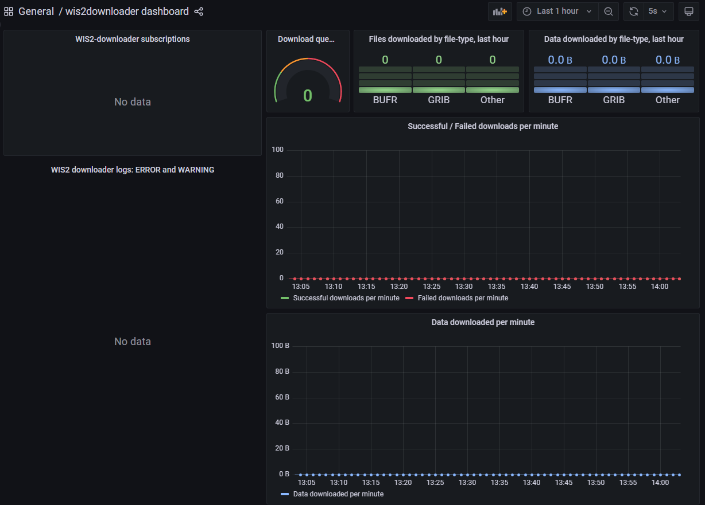

Загрузка и декодирование данных из WIS2
Учебные результаты!
К концу этого практического занятия вы сможете:
- использовать "wis2downloader" для подписки на уведомления о данных WIS2 и загрузки данных на вашу локальную систему
- просматривать статус загрузок в панели управления Grafana
- декодировать некоторые загруженные данные с помощью контейнера "decode-bufr-jupyter"
Введение
На этом занятии вы научитесь настраивать подписку на WIS2 Broker и автоматически загружать данные на вашу локальную систему с помощью сервиса "wis2downloader", включенного в wis2box.
О wis2downloader
Wis2downloader также доступен как самостоятельный сервис, который может быть запущен на другой системе, отличной от той, которая публикует уведомления WIS2. Смотрите wis2downloader для получения дополнительной информации о использовании wis2downloader как самостоятельного сервиса.
Если вы хотите разработать свой собственный сервис для подписки на уведомления WIS2 и загрузки данных, вы можете использовать исходный код wis2downloader в качестве справочника.
Other
Следующие инструменты также могут быть использованы для поиска и доступа к данным из WIS2:
- pywiscat предоставляет возможности поиска поверх WIS2 Global Discovery Catalogue для поддержки отчетности и анализа каталога WIS2 и связанных с ним метаданных обнаружения
- pywis-pubsub предоставляет возможности подписки и загрузки данных ВМО из сервисов инфраструктуры WIS2
Подготовка
Перед началом занятия войдите в свою студенческую виртуальную машину и убедитесь, что ваш экземпляр wis2box работает.
Просмотр панели управления wis2downloader в Grafana
Откройте веб-браузер и перейдите на панель управления Grafana для вашего экземпляра wis2box, перейдя по адресу http://YOUR-HOST:3000.
Нажмите на панели слева на "dashboards", затем выберите wis2downloader dashboard.
Вы должны увидеть следующую панель управления:

Эта панель управления основана на метриках, публикуемых сервисом wis2downloader, и покажет вам статус текущих загрузок.
В левом верхнем углу вы можете видеть текущие активные подписки.
Оставьте эту панель управления открытой, так как вы будете использовать ее для мониторинга прогресса загрузки в следующем упражнении.
Просмотр конфигурации wis2downloader
Сервис wis2downloader, запущенный стеком wis2box, можно настроить с помощью переменных окружения, определенных в вашем файле wis2box.env.
Следующие переменные окружения используются wis2downloader:
- DOWNLOAD_BROKER_HOST: Имя хоста брокера MQTT, к которому следует подключаться. По умолчанию globalbroker.meteo.fr
- DOWNLOAD_BROKER_PORT: Порт брокера MQTT, к которому следует подключаться. По умолчанию 443 (HTTPS для веб-сокетов)
- DOWNLOAD_BROKER_USERNAME: Имя пользователя для подключения к брокеру MQTT. По умолчанию everyone
- DOWNLOAD_BROKER_PASSWORD: Пароль для подключения к брокеру MQTT. По умолчанию everyone
- DOWNLOAD_BROKER_TRANSPORT: websockets или tcp, механизм транспортировки для подключения к брокеру MQTT. По умолчанию websockets,
- DOWNLOAD_RETENTION_PERIOD_HOURS: Период хранения загруженных данных в часах. По умолчанию 24
- DOWNLOAD_WORKERS: Количество рабочих для загрузки. По умолчанию 8. Определяет количество параллельных загрузок.
- DOWNLOAD_MIN_FREE_SPACE_GB: Минимальное свободное пространство в ГБ, которое следует оставить на томе, где хранятся загрузки. По умолчанию 1.
Для просмотра текущей конфигурации wis2downloader вы можете использовать следующую команду:
cat ~/wis2box/wis2box.env | grep DOWNLOAD
Просмотр конфигурации wis2downloader
Какой брокер MQTT используется по умолчанию для подключения wis2downloader?
Какой период хранения загруженных данных установлен по умолчанию?
Нажмите, чтобы увидеть ответ
Брокер MQTT, к которому подключается wis2downloader по умолчанию, это globalbroker.meteo.fr.
Период хранения загруженных данных по умолчанию составляет 24 часа.
Обновление конфигурации wis2downloader
Для обновления конфигурации wis2downloader вы можете отредактировать файл wis2box.env. Для применения изменений вы можете повторно запустить команду запуска стека wis2box:
python3 wis2box-ctl.py start
И вы увидите, как сервис wis2downloader перезапускается с новой конфигурацией.
Вы можете сохранить конфигурацию по умолчанию для целей этого упражнения.
Добавление подписок в wis2downloader
Внутри контейнера wis2downloader вы можете использовать командную строку для просмотра, добавления и удаления подписок.
Для входа в контейнер wis2downloader используйте следующую команду:
python3 wis2box-ctl.py login wis2downloader
Затем используйте следующую команду для просмотра активных на данный момент подписок:
wis2downloader list-subscriptions
Эта команда вернет пустой список, так как в данный момент активных подписок нет.
Для целей этого упражнения мы подпишемся на следующую тему cache/a/wis2/de-dwd-gts-to-wis2/#, чтобы подписаться на данные, опубликованные шлюзом GTS-to-WIS2, размещенным DWD, и уведомления о загрузке из Global Cache.
Для добавления этой подписки используйте следующую команду:
wis2downloader add-subscription --topic cache/a/wis2/de-dwd-gts-to-wis2/#
Затем выйдите из контейнера wis2downloader, набрав exit:
exit
Проверьте панель управления wis2downloader в Grafana, чтобы увидеть добавленную новую подписку. Подождите несколько минут, и вы должны увидеть начало первых загрузок. Переходите к следующему упражнению, как только подтвердите, что загрузки начались.
Просмотр загруженных данных
Сервис wis2downloader в стеке wis2box загружает данные в каталог 'downloads' в каталоге, который вы определили как WIS2BOX_HOST_DATADIR в вашем файле wis2box.env. Чтобы просмотреть содержимое каталога загрузок, вы можете использовать следующую команду:
ls -R ~/wis2box-data/downloads
Обратите внимание, что загруженные данные хранятся в каталогах, названных в соответствии с темой, на которую было опубликовано уведомление WIS2.
Удаление подписок из wis2downloader
Затем снова войдите в контейнер wis2downloader:
python3 wis2box-ctl.py login wis2downloader
и удалите подписку, которую вы добавили из wis2downloader, используя следующую команду:
wis2downloader remove-subscription --topic cache/a/wis2/de-dwd-gts-to-wis2/#
И выйдите из контейнера wis2downloader, набрав exit:
exit
Проверьте панель управления wis2downloader в Grafana, чтобы увидеть удаленную подписку. Вы должны увидеть остановку загрузок.
Загрузка и декодирование данных для тропического циклона
На этом упражнении вы подпишетесь на WIS2 Training Broker, который публикует примерные данные для учебных целей. Вы настроите подписку для загрузки данных о тропическом циклоне. Затем вы декодируете загруженные данные с помощью контейнера "decode-bufr-jupyter".
Подписка на wis2training-broker и настройка новой подписки
Это демонстрирует, как подписаться на брокера, который не является брокером по умолчанию, и позволит вам загрузить некоторые данные, опубликованные WIS2 Training Broker.
Отредактируйте файл wis2box.env и измените DOWNLOAD_BROKER_HOST на wis2training-broker.wis2dev.io, измените DOWNLOAD_BROKER_PORT на 1883 и измените DOWNLOAD_BROKER_TRANSPORT на tcp:
# настройки загрузчика
DOWNLOAD_BROKER_HOST=wis2training-broker.wis2dev.io
DOWNLOAD_BROKER_PORT=1883
DOWNLOAD_BROKER_USERNAME=everyone
DOWNLOAD_BROKER_PASSWORD=everyone
# механизм транспортировки загрузки (tcp или websockets)
DOWNLOAD_BROKER_TRANSPORT=tcp
Затем запустите команду 'start' снова, чтобы применить изменения:
python3 wis2box-ctl.py start
Проверьте журналы wis2downloader, чтобы увидеть, было ли успешным подключение к новому брокеру:
docker logs wis2downloader
Вы должны увидеть следующее сообщение в журнале:
...
INFO - Connecting...
INFO - Host: wis2training-broker.wis2dev.io, port: 1883
INFO - Connected successfully
Теперь мы настроим новую подписку на тему для загрузки данных о тропическом циклоне от WIS2 Training Broker.
Войдите в контейнер wis2downloader:
python3 wis2box-ctl.py login wis2downloader
И выполните следующую команду (скопируйте и вставьте это, чтобы избежать опечаток):
wis2downloader add-subscription --topic origin/a/wis2/int-wis2-training/data/core/weather/prediction/forecast/medium-range/probabilistic/trajectory
Выйдите из контейнера wis2downloader, набрав exit.
Подождите, пока вы не увидите начало загрузок на панели управления wis2downloader в Grafana.
Загрузка данных из WIS2 Training Broker
WIS2 Training Broker - это тестовый брокер, который используется в учебных целях и может не публиковать данные все время.
Во время очных учебных занятий местный тренер обеспечит публикацию данных WIS2 Training Broker для вашей загрузки.
Если вы выполняете это упражнение вне учебной сессии, вы можете не увидеть загружаемых данных.
Проверьте, были ли загружены данные, снова проверив журналы wis2downloader:
docker logs wis2downloader
Вы должны увидеть сообщение журнала, аналогичное следующему:
[...] INFO - Message received under topic origin/a/wis2/int-wis2-training/data/core/weather/prediction/forecast/medium-range/probabilistic/trajectory
[...] INFO - Downloaded A_JSXX05ECEP020000_C_ECMP_...
Декодирование загруженных данных
Чтобы продемонстрировать, как вы можете декодировать загруженные данные, мы запустим новый контейнер с использованием образа 'decode-bufr-jupyter'.
Этот контейнер запустит сервер Jupyter notebook на вашем экземпляре, который включает библиотеку "ecCodes", которую вы можете использовать для декодирования данных BUFR.
Мы будем использовать примерные тетради, включенные в ~/exercise-materials/notebook-examples, для декодирования загруженных данных о тропических циклонах.
Для запуска контейнера используйте следующую команду:
docker run -d --name decode-bufr-jupyter \
-v ~/wis2box-data/downloads:/root/downloads \
-p 8888:8888 \
-e JUPYTER_TOKEN=dataismagic! \
mlimper/decode-bufr-jupyter
О контейнере decode-bufr-jupyter
Контейнер decode-bufr-jupyter - это пользовательский контейнер, который включает библиотеку ecCodes и запускает сервер Jupyter notebook. Контейнер основан на образе, который включает библиотеку ecCodes для декодирования данных BUFR, а также библиотеки для построения графиков и анализа данных.
Команда выше запускает контейнер в отсоединенном режиме, с именем decode-bufr-jupyter, порт 8888 сопоставляется с хост-системой, и переменная окружения JUPYTER_TOKEN устанавливается в dataismagic!.
Команда выше также монтирует каталог ~/wis2box-data/downloads в /root/downloads в контейнере. Это гарантирует, что загруженные данные доступны серверу Jupyter notebook.
После запуска контейнера вы можете получить доступ к серверу Jupyter notebook, перейдя по адресу `http://
Прочитайте инструкции в тетради и выполните ячейки для декодирования загруженных данных по тропическим циклонам. Запустите каждую ячейку, кликнув по ней, а затем нажав кнопку запуска на панели инструментов или нажав Shift+Enter.
В конце вы должны увидеть график вероятности удара тропического циклона:

Question
Результат показывает предсказанную вероятность трека тропического шторма в пределах 200 км. Как бы вы обновили тетрадь, чтобы отобразить предсказанную вероятность трека тропического шторма в пределах 300 км?
Нажмите, чтобы увидеть ответ
Чтобы обновить тетрадь для отображения предсказанной вероятности трека тропического шторма на другом расстоянии, вы можете обновить переменную distance_threshold в блоке кода, который рассчитывает вероятность удара.
Чтобы отобразить предсказанную вероятность трека тропического шторма в пределах 300 км,
# установить пороговое расстояние (в метрах)
distance_threshold = 300000 # 300 км в метрах
Затем перезапустите ячейки в тетради, чтобы увидеть обновленный график.
Декодирование данных BUFR
Упражнение, которое вы только что выполнили, показало один конкретный пример того, как можно декодировать данные BUFR с помощью библиотеки ecCodes. Различные типы данных могут требовать разных шагов декодирования, и вам может потребоваться обратиться к документации для типа данных, с которым вы работаете.
Для получения дополнительной информации, пожалуйста, обратитесь к документации ecCodes.
Заключение
Поздравляем!
В этом практическом занятии вы научились:
- использовать 'wis2downloader' для подписки на WIS2 Broker и загрузки данных на вашу локальную систему
- просматривать статус загрузок в панели управления Grafana
- декодировать некоторые загруженные данные с помощью контейнера 'decode-bufr-jupyter'